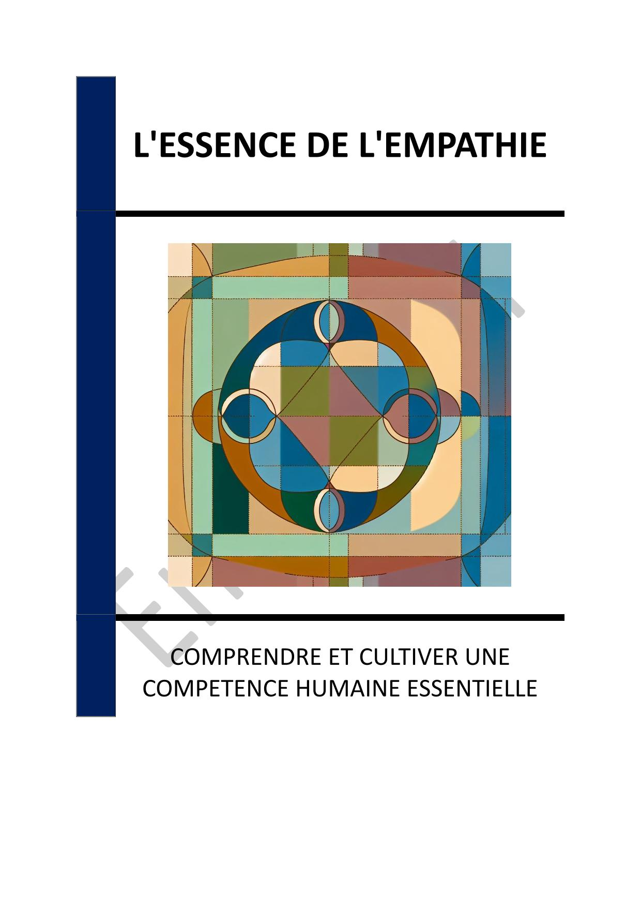

- INTRODUCTION - L'ÉCLAT INTEMPOREL DE VERMEER
- Chapitre 1 - LA VIE ET L'ENFANCE DE JOHANNES VERMEER
- Chapitre 2 - LE CONTEXTE HISTORIQUE DE L'ÂGE D'OR NÉERLANDAIS
- Chapitre 3 - TECHNIQUES ARTISTIQUES DE VERMEER
- Chapitre 4 - ANALYSE DES ŒUVRES MAJEURES
- Chapitre 5 - LA VIE QUOTIDIENNE ET LES THÈMES DANS L'ART DE VERMEER
- Chapitre 6 - L'INFLUENCE DE VERMEER DANS L'ART CONTEMPORAIN
- Chapitre 7 - REDÉCOUVERTE ET RÉHABILITATION DE VERMEER AU XIXE SIÈCLE
- Chapitre 8 - L'HÉRITAGE DURABLE DE VERMEER
- CONCLUSION - L'HÉRITAGE ÉTERNEL DE VERMEER
📄 Consulter les annexes du livre
Mentions légales